Suavización exponencial Primer Orden (SES)#
import pandas as pd
import matplotlib.pyplot as plt
import seaborn as sns
import warnings
warnings.filterwarnings("ignore")
sns.set_style("darkgrid")
djia_df = pd.read_excel('../Datasets/DJIA_Jan2016_Dec2016.xlsx')
djia_df['Date'] = pd.to_datetime(djia_df['Date'], '%Y-%m-%d')
djia_df.index = djia_df['Date']
djia_df.drop('Date', axis=1, inplace=True)
djia_df.head()
| Open | High | Low | Close | Adj Close | Volume | |
|---|---|---|---|---|---|---|
| Date | ||||||
| 2016-01-04 | 17405.480469 | 17405.480469 | 16957.630859 | 17148.939453 | 17148.939453 | 148060000 |
| 2016-01-05 | 17147.500000 | 17195.839844 | 17038.609375 | 17158.660156 | 17158.660156 | 105750000 |
| 2016-01-06 | 17154.830078 | 17154.830078 | 16817.619141 | 16906.509766 | 16906.509766 | 120250000 |
| 2016-01-07 | 16888.359375 | 16888.359375 | 16463.630859 | 16514.099609 | 16514.099609 | 176240000 |
| 2016-01-08 | 16519.169922 | 16651.890625 | 16314.570313 | 16346.450195 | 16346.450195 | 141850000 |
djia_ts = pd.Series(data=djia_df['Close'].values, index=djia_df.index)
djia_ts.head()
Date
2016-01-04 17148.939453
2016-01-05 17158.660156
2016-01-06 16906.509766
2016-01-07 16514.099609
2016-01-08 16346.450195
dtype: float64
plt.figure()
djia_ts.plot(color='b')
plt.title('Dow Jones Industrial Average between Jan 2016 - Dec 2016')
plt.xlabel('Time')
plt.ylabel('Closing Value')
plt.show()
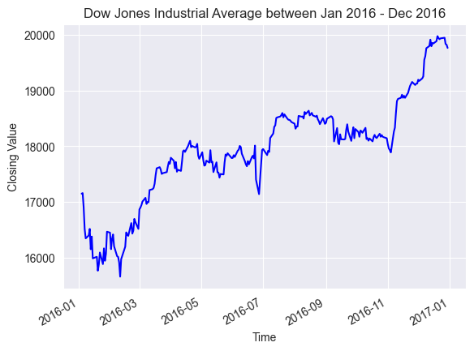
def firstsmooth(y, lambda_, start=None):
ytilde = y.copy()
if start is None:
start = y[0]
ytilde[0] = lambda_ * y[0] + (1 - lambda_) * start
for i in range(1, len(y)):
ytilde[i] = lambda_ * y[i] + (1 - lambda_) * ytilde[i - 1]
return ytilde
dji_smooth1 = firstsmooth(y=djia_ts, lambda_=0.4)
plt.plot(djia_ts, marker='o', linestyle='', markersize=3, label='Dow Jones')
plt.plot(dji_smooth1, label='SES $\lambda=0.4$')
plt.xlabel('Date')
plt.ylabel('Dow Jones')
plt.legend()
plt.show()
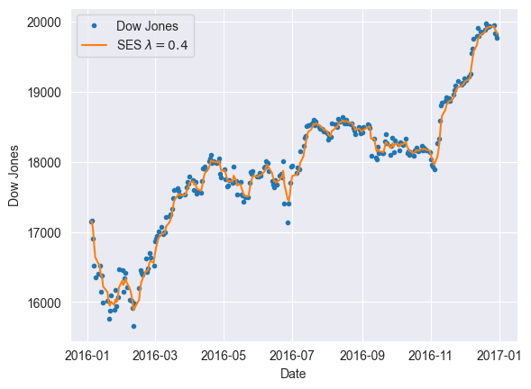
Implementación manual#
def measacc_fs(y, lambda_):
out = firstsmooth(y, lambda_)
T = len(y)
yh = y.copy().values
out = pd.concat([pd.Series([y[0]]), out.iloc[:-1]], ignore_index=True).values
prederr = yh - out
SSE = sum(prederr**2)
MAPE = 100 * sum(abs(prederr / yh)) / T
MAD = sum(abs(prederr)) / T
MSD = sum(prederr**2) / T
ret1 = pd.DataFrame({
"SSE": [SSE],
"MAPE": [MAPE],
"MAD": [MAD],
"MSD": [MSD]
})
ret1.reset_index(drop=True, inplace=True)
return ret1
measacc_fs(djia_ts, 0.4)
| SSE | MAPE | MAD | MSD | |
|---|---|---|---|---|
| 0 | 6.844383e+06 | 0.689939 | 121.602389 | 27160.251204 |
Implementación con libreria#
from statsmodels.tsa.holtwinters import ExponentialSmoothing
def measacc_hw(y, lambda_):
model = ExponentialSmoothing(y.values)
fit = model.fit(smoothing_level=lambda_)
T = len(y)
yh = y.copy().values
y_pred = pd.Series(data=fit.fittedvalues, index=y.index)
out = pd.concat([pd.Series([y[0]]), y_pred[:-1]], ignore_index=True).values
prederr = yh - out
SSE = sum(prederr**2)
MAPE = 100 * sum(abs(prederr / yh)) / T
MAD = sum(abs(prederr)) / T
MSD = sum(prederr**2) / T
ret1 = pd.DataFrame({
"SSE": [SSE],
"MAPE": [MAPE],
"MAD": [MAD],
"MSD": [MSD]
})
ret1.reset_index(drop=True, inplace=True)
return ret1
measacc_hw(djia_ts, 0.4)
| SSE | MAPE | MAD | MSD | |
|---|---|---|---|---|
| 0 | 1.084430e+07 | 0.876061 | 154.763863 | 43032.952285 |
Suavización exponencial de Segundo Orden#
import matplotlib.pyplot as plt
cpi_smooth1 = firstsmooth(y=djia_ts, lambda_=0.3)
cpi_smooth2 = firstsmooth(y=cpi_smooth1, lambda_=0.3)
cpi_hat = 2 * cpi_smooth1 - cpi_smooth2
plt.plot(djia_ts, marker='o', linestyle='', markersize=3, label='Dow Jones')
plt.plot(cpi_hat, label='DES $\lambda=0.3$')
plt.xlabel('Date')
plt.ylabel('Dow Jones')
plt.legend()
plt.show()
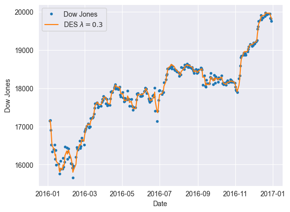
Forecasting#
import pandas as pd
speed_df = pd.read_csv("https://raw.githubusercontent.com/lihkir/Data/main/weekly_average_speed.csv")
speed_df.head()
| week | speed | |
|---|---|---|
| 0 | 1 | 47.12 |
| 1 | 2 | 45.01 |
| 2 | 3 | 44.69 |
| 3 | 4 | 45.41 |
| 4 | 5 | 45.45 |
speed_ts = pd.Series(data=speed_df['speed'].values, index=speed_df.index)
speed_ts.head()
0 47.12
1 45.01
2 44.69
3 45.41
4 45.45
dtype: float64
plt.figure()
speed_ts.plot(color='b')
plt.title('The weekly average speed during nonrush hours.')
plt.xlabel('Week')
plt.ylabel('Speed');
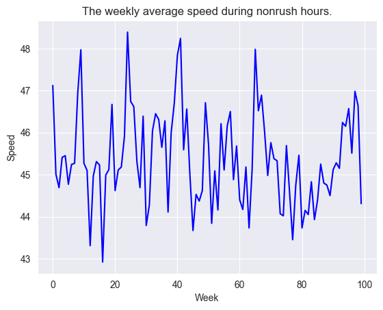
import numpy as np
import matplotlib.pyplot as plt
lambda_vec = np.arange(0.1, 1.0, 0.1)
def sse_speed(sc):
return measacc_fs(speed_ts, sc)['SSE'].values[0]
sse_vec = pd.Series()
for lambda_ in lambda_vec:
sse_vec.loc[len(sse_vec)] = sse_speed(lambda_)
opt_lambda = sse_vec.min()
plt.plot(lambda_vec, sse_vec, marker='o', linestyle='-')
plt.title("$SSE$ vs. $\lambda$")
plt.xlabel('$\lambda$')
plt.ylabel('$SSE$')
plt.axvline(x=lambda_vec[sse_vec.idxmin()], color='red')
plt.show()
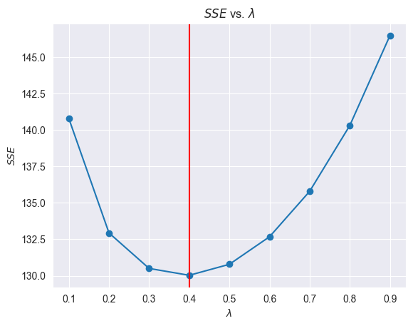
import pandas as pd
import numpy as np
import matplotlib.pyplot as plt
cpi_data = pd.read_csv("https://raw.githubusercontent.com/lihkir/Data/main/CPI.csv", skiprows=1, skipfooter=1, engine='python')
cpi_data.head()
| Year | Period | Consumer Price Index | Over-the-Year Percent Change | Over-the-Month Percent Change | |
|---|---|---|---|---|---|
| 0 | 2024 | March | 312.3 | 3.5% | 0.6% |
| 1 | 2024 | February | 310.3 | 3.2% | 0.6% |
| 2 | 2024 | January | 308.4 | 3.1% | 0.5% |
| 3 | 2023 | December | 306.7 | 3.4% | -0.1% |
| 4 | 2023 | November | 307.1 | 3.1% | -0.2% |
cpi_data['Date'] = cpi_data['Period'].astype(str) + '-' + cpi_data['Year'].astype(str)
cpi_data.index = cpi_data['Date']
cpi_data.drop('Date', axis=1, inplace=True)
cpi_data.head()
| Year | Period | Consumer Price Index | Over-the-Year Percent Change | Over-the-Month Percent Change | |
|---|---|---|---|---|---|
| Date | |||||
| March-2024 | 2024 | March | 312.3 | 3.5% | 0.6% |
| February-2024 | 2024 | February | 310.3 | 3.2% | 0.6% |
| January-2024 | 2024 | January | 308.4 | 3.1% | 0.5% |
| December-2023 | 2023 | December | 306.7 | 3.4% | -0.1% |
| November-2023 | 2023 | November | 307.1 | 3.1% | -0.2% |
cpi_ts = pd.Series(data=cpi_data['Consumer Price Index'].values, index=cpi_data.index)[::-1]
cpi_ts
Date
January-1913 9.8
February-1913 9.8
March-1913 9.8
April-1913 9.8
May-1913 9.7
...
November-2023 307.1
December-2023 306.7
January-2024 308.4
February-2024 310.3
March-2024 312.3
Length: 1335, dtype: float64
cpi_dates = cpi_ts[cpi_ts.index.get_loc('January-1995'):cpi_ts.index.get_loc('December-2004')+1]
cpi_dates
Date
January-1995 150.3
February-1995 150.9
March-1995 151.4
April-1995 151.9
May-1995 152.2
...
August-2004 189.5
September-2004 189.9
October-2004 190.9
November-2004 191.0
December-2004 190.3
Length: 120, dtype: float64
fig, ax = plt.subplots()
cpi_dates.plot(ax=ax, color='b')
ax.set_title('US Consumer Price Index (CPI)')
ax.set_xlabel('Closing Value')
ax.set_ylabel('Time')
ax.tick_params(axis='x', rotation=45)
ax.tick_params(axis='y', rotation=45)
plt.show()
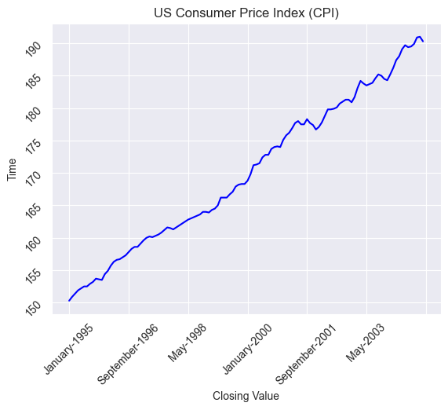
lambda_ = 0.3
tau_length = 12
cpi_smooth1 = firstsmooth(cpi_dates.iloc[:-tau_length], lambda_)
cpi_smooth2 = firstsmooth(cpi_smooth1, lambda_)
cpi_hat = 2 * cpi_smooth1 - cpi_smooth2
tau = np.arange(1, tau_length+1)
T = len(cpi_smooth1)
cpi_forecast = (2 + tau * (lambda_ / (1 - lambda_))) * cpi_smooth1[T-1] - (1 + tau * (lambda_ / (1 - lambda_))) * cpi_smooth2[T-1]
ctau = np.sqrt(1 + (lambda_ / ((2 - lambda_)**3)) * (10 - 14 * lambda_ + 5 * (lambda_**2) + 2 * tau * lambda_ * (4 - 3 * lambda_) + 2 * (tau**2) * (lambda_**2)))
alpha_lev = 0.05
sig_est = np.sqrt(np.var(cpi_dates.iloc[1:] - cpi_hat[:-1]))
cl = np.quantile(ctau / ctau[0] * sig_est, 1 - alpha_lev / 2)
fig, ax = plt.subplots()
ax.plot(cpi_dates.index[:-tau_length], cpi_dates.iloc[:-tau_length].values, marker='o', linestyle='', markersize=3)
ax.plot(cpi_dates.index[-tau_length:], cpi_dates.iloc[-tau_length:].values, marker='o', linestyle='', markersize=3)
ax.plot(cpi_dates.index[-tau_length:], cpi_forecast, label='Forecast')
ax.plot(cpi_dates.index[-tau_length:], cpi_forecast + cl, label='Upper bound')
ax.plot(cpi_dates.index[-tau_length:], cpi_forecast - cl, label='Lower bound')
n = 15
plt.xticks(range(0, len(cpi_dates.index), n), rotation=45)
ax.set_xlabel('Closing Value')
ax.set_ylabel('Time')
ax.tick_params(axis='x', rotation=45)
ax.tick_params(axis='y', rotation=45)
plt.legend()
plt.show()
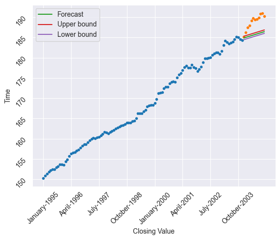
import numpy as np
from scipy.stats import norm
lambda_ = 0.3
T = 108
tau = 12
alpha_lev = 0.05
cpi_forecast = np.zeros(tau)
cl = np.zeros(tau)
cpi_smooth1 = np.zeros(T + tau)
cpi_smooth2 = np.zeros(T + tau)
for i in range(1, tau + 1):
cpi_smooth1[:T + i - 1] = firstsmooth(y=cpi_dates.iloc[:T + i - 1], lambda_=lambda_)
cpi_smooth2[:T + i - 1] = firstsmooth(y=cpi_smooth1[:T + i - 1], lambda_=lambda_)
cpi_forecast[i - 1] = (2 + (lambda_ / (1 - lambda_))) * cpi_smooth1[T + i - 2] - \
(1 + (lambda_ / (1 - lambda_))) * cpi_smooth2[T + i - 2] # horizon one each time
cpi_hat = 2 * cpi_smooth1[:T + i - 1] - cpi_smooth2[:T + i - 1]
sig_est = np.sqrt(np.var(cpi_dates.iloc[1:T + i - 1] - cpi_hat[:-1]))
cl[i - 1] = norm.ppf(1 - alpha_lev / 2) * sig_est
plt.figure()
plt.plot(cpi_dates.index[:-tau], cpi_dates.iloc[:-tau].values, marker='o', linestyle='', markersize=3, label='CPI')
plt.plot(cpi_dates.index[-tau:], cpi_dates.iloc[-tau:].values, marker='o', markersize=3, color='black')
plt.plot(cpi_dates.index[-tau:], cpi_forecast, label='Forecast')
plt.plot(cpi_dates.index[-tau:], cpi_forecast + cl, linestyle='--', color='red', label='Confidence Interval')
plt.plot(cpi_dates.index[-tau:], cpi_forecast - cl, linestyle='--', color='red')
plt.legend()
n = 15
plt.xticks(range(0, len(cpi_dates.index), n), rotation=45)
plt.xlabel('Date')
plt.ylabel('CPI')
plt.show()
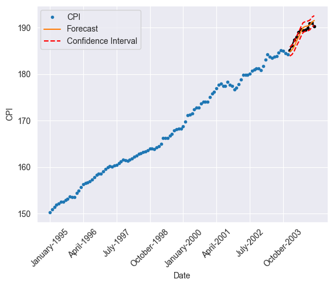
Suavización con factor de descuento#
def tlsmooth(y, delta_, y_tilde_start=None, lambda_start=1):
T = len(y)
Qt = np.zeros(T)
Dt = np.zeros(T)
y_tilde = np.zeros(T)
lambd = np.zeros(T)
err = np.zeros(T)
lambd[0] = lambda_start
if y_tilde_start is None:
y_tilde[0] = y[0]
else:
y_tilde[0] = y_tilde_start
for i in range(1, T):
err[i] = y[i] - y_tilde[i-1]
Qt[i] = delta_ * err[i] + (1 - delta_) * Qt[i-1]
Dt[i] = delta_ * abs(err[i]) + (1 - delta_) * Dt[i-1]
lambd[i] = abs(Qt[i] / Dt[i])
y_tilde[i] = lambd[i] * y[i] + (1 - lambd[i]) * y_tilde[i-1]
return np.column_stack((y_tilde, lambd, err, Qt, Dt))
out_tl_dji = tlsmooth(djia_ts, 0.3)
last_fc = 100
plt.plot(djia_ts.index[-last_fc:], djia_ts[-last_fc:], marker='o', linestyle='', color='black', label='Dow Jones')
plt.plot(djia_ts.index[-last_fc:], out_tl_dji[-last_fc:, 0], color='blue', label='TL Smoother')
plt.plot(djia_ts.index[-last_fc:], dji_smooth1[-last_fc:], color='red', label='Exponential Smoother')
plt.xlabel('Date')
plt.ylabel('Dow Jones')
plt.legend()
plt.show()
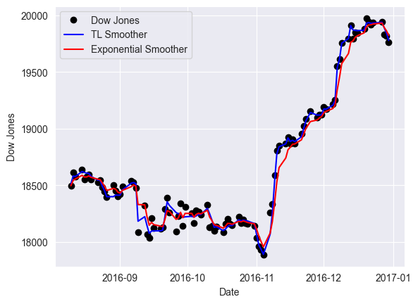
Holt Winters#
import pandas as pd
import numpy as np
from matplotlib import pyplot as plt
import seaborn as sns
import statsmodels.api as sm
from sklearn.metrics import mean_absolute_error
import itertools
import warnings
from statsmodels.tools.sm_exceptions import ConvergenceWarning
warnings.simplefilter('ignore', ConvergenceWarning)
from statsmodels.tsa.holtwinters import ExponentialSmoothing
from statsmodels.tsa.holtwinters import SimpleExpSmoothing
from statsmodels.tsa.seasonal import seasonal_decompose
import statsmodels.tsa.api as smt
data = sm.datasets.co2.load_pandas()
y = data.data
y.head()
| co2 | |
|---|---|
| 1958-03-29 | 316.1 |
| 1958-04-05 | 317.3 |
| 1958-04-12 | 317.6 |
| 1958-04-19 | 317.5 |
| 1958-04-26 | 316.4 |
y = y['co2'].resample('MS').mean()
y.head()
1958-03-01 316.100000
1958-04-01 317.200000
1958-05-01 317.433333
1958-06-01 NaN
1958-07-01 315.625000
Freq: MS, Name: co2, dtype: float64
y.isnull().sum()
5
y = y.fillna(y.bfill())
y.isnull().sum()
0
y.plot()
plt.title('Monthly CO2 concentrations')
plt.xlabel('Time')
plt.ylabel('CO2 concentratition');
plt.show()
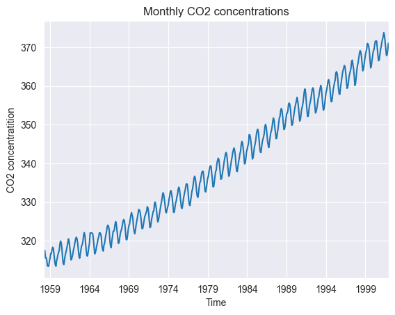
tau_test = 48
tau_val = 48
train = y[:-(tau_val + tau_test)].copy()
val = y[-(tau_val + tau_test):-tau_test].copy()
test = y[-tau_test:].copy()
print(f"Train: {len(train)}, Validation: {len(val)}, Test: {len(test)}")
Train: 430, Validation: 48, Test: 48
def plot_model(train, val, test, y_pred, title):
plt.figure(figsize=(10, 6))
train[-300:].plot(legend=True, label="Train", color='blue', title=f"{title} - Train, Validation, Test and Prediction")
val.plot(legend=True, label="Validation", color='orange')
test.plot(legend=True, label="Test", color='green')
y_pred.plot(legend=True, label="Prediction", color='red', style='--')
mae = mean_absolute_error(test, y_pred)
plt.title(f"{title}, MAE: {round(mae, 2)}")
plt.xlabel("Time")
plt.ylabel("Value")
plt.show()
def ses_optimizer(train, val, alphas, step):
best_alpha, best_mae = None, float("inf")
for alpha in alphas:
ses_model = SimpleExpSmoothing(train).fit(smoothing_level=alpha, optimized=False)
y_pred = ses_model.forecast(step)
mae = mean_absolute_error(val, y_pred)
if mae < best_mae:
best_alpha, best_mae = alpha, mae
return best_alpha, best_mae
def ses_model_tuning(train, val, test, step, title="Model Tuning - Single Exponential Smoothing"):
alphas = np.arange(0.8, 1, 0.01)
best_alpha, best_mae = ses_optimizer(train, val, alphas, step=step)
train_val = pd.concat([train, val])
final_model = SimpleExpSmoothing(train_val).fit(smoothing_level=best_alpha, optimized=False)
y_pred = final_model.forecast(step)
mae = mean_absolute_error(test, y_pred)
plot_model(train, val, test, y_pred, title)
ses_model_tuning(train, val, test, step=tau_test)
def des_optimizer(train, val, alphas, betas, trend, step):
best_alpha, best_beta, best_mae = None, None, float("inf")
for alpha in alphas:
for beta in betas:
des_model = ExponentialSmoothing(train, trend=trend).fit(smoothing_level=alpha, smoothing_slope=beta)
y_pred = des_model.forecast(step)
mae = mean_absolute_error(val, y_pred)
if mae < best_mae:
best_alpha, best_beta, best_mae = alpha, beta, mae
return best_alpha, best_beta, best_mae
def des_model_tuning(train , val, test, step, trend, title="Model Tuning - Double Exponential Smoothing"):
alphas = np.arange(0.01, 1, 0.10)
betas = np.arange(0.01, 1, 0.10)
best_alpha, best_beta, best_mae = des_optimizer(train, val, alphas, betas, trend=trend, step=step)
train_val = pd.concat([train, val])
final_model = ExponentialSmoothing(train_val, trend=trend).fit(smoothing_level=best_alpha, smoothing_slope=best_beta)
y_pred = final_model.forecast(step)
mae = mean_absolute_error(test, y_pred)
plot_model(train, val, test, y_pred, title)
des_model_tuning(train, val, test, step=tau_test, trend='add')
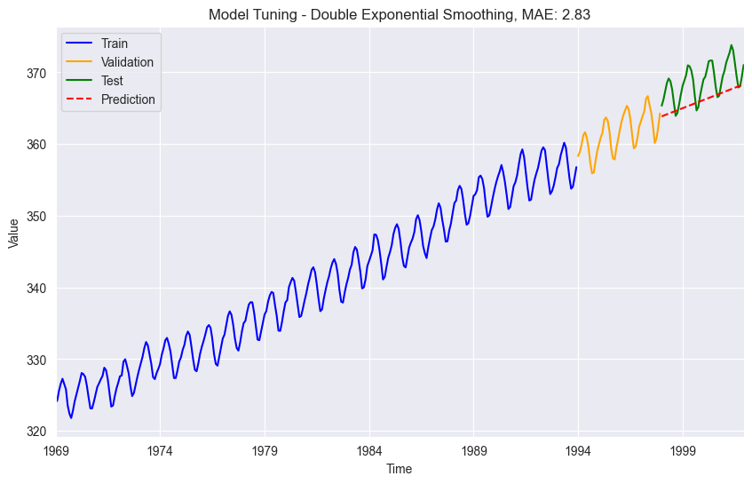
def tes_optimizer(train, val, abg, trend, seasonal, seasonal_periods, step):
best_alpha, best_beta, best_gamma, best_mae = None, None, None, float("inf")
for comb in abg:
tes_model = ExponentialSmoothing(train, trend=trend, seasonal=seasonal, seasonal_periods=seasonal_periods).\
fit(smoothing_level=comb[0], smoothing_slope=comb[1], smoothing_seasonal=comb[2])
y_pred = tes_model.forecast(step)
mae = mean_absolute_error(val, y_pred)
if mae < best_mae:
best_alpha, best_beta, best_gamma, best_mae = comb[0], comb[1], comb[2], mae
return best_alpha, best_beta, best_gamma, best_mae
def tes_model_tuning(train, val, test, step, trend, seasonal, seasonal_periods, title="Model Tuning - Triple Exponential Smoothing"):
alphas = betas = gammas = np.arange(0.10, 1, 0.10)
abg = list(itertools.product(alphas, betas, gammas))
best_alpha, best_beta, best_gamma, best_mae = tes_optimizer(train, val, abg=abg, trend=trend, seasonal=seasonal, seasonal_periods=seasonal_periods, step=step)
final_model = ExponentialSmoothing(train, trend=trend, seasonal=seasonal).fit(smoothing_level=best_alpha, smoothing_slope=best_beta, smoothing_seasonal=best_gamma)
y_pred = final_model.forecast(step + step)[-step:]
mae = mean_absolute_error(test, y_pred)
plot_model(train, val, test, y_pred, title)
return best_alpha, best_beta, best_gamma, best_mae
best_alpha, best_beta, best_gamma, best_mae = tes_model_tuning(train, val, test, step=tau_test, trend='add', seasonal='add', seasonal_periods=12)
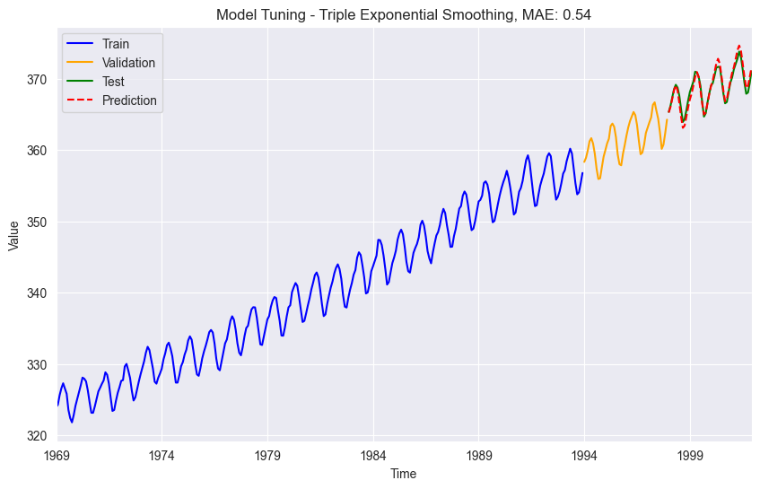